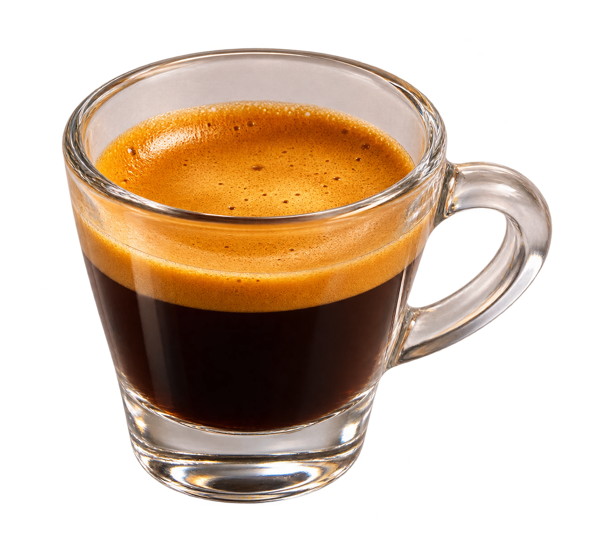
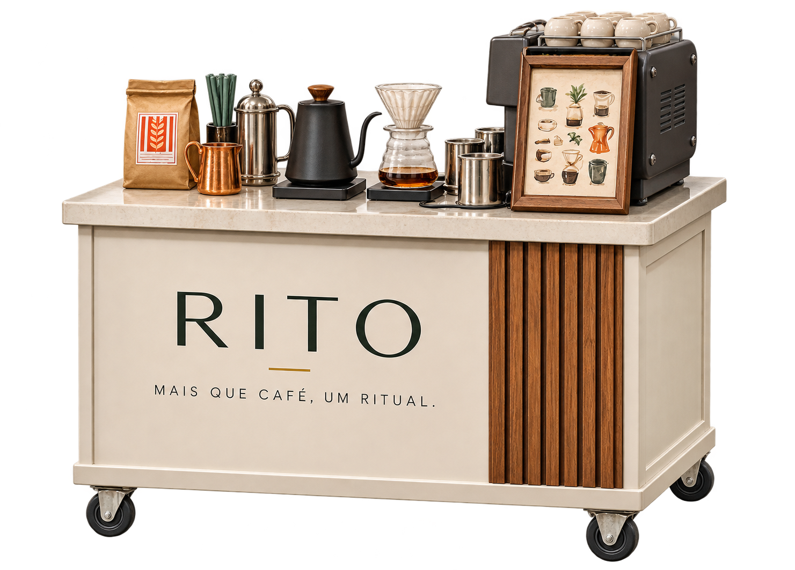
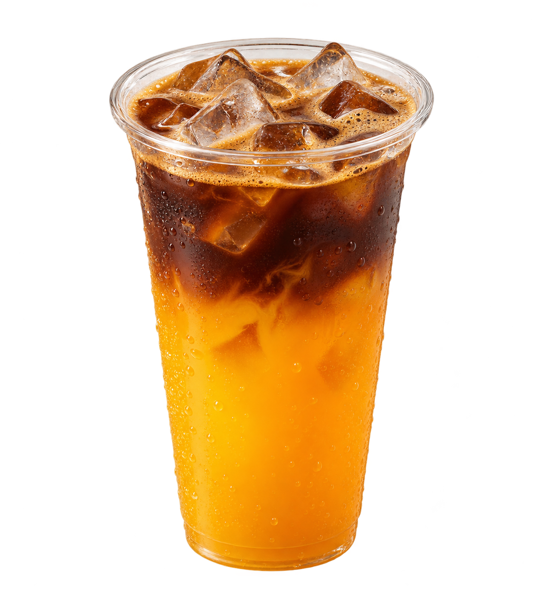
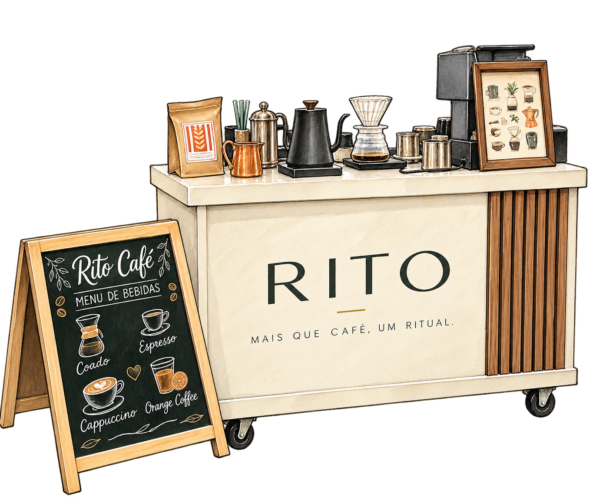
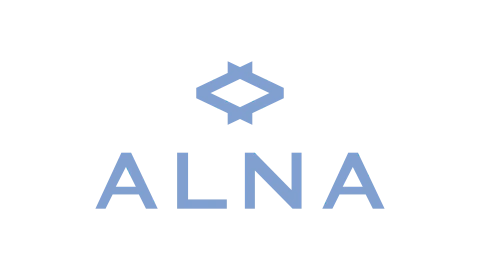
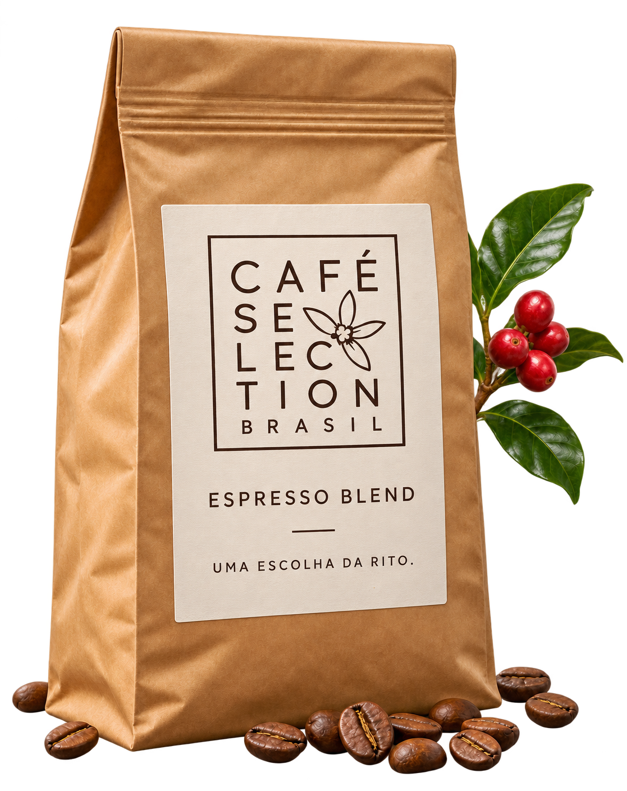

01 / PEQUENO. MARCANTE.
O essencial. Sem distrações.
Nosso espresso é curto no copo e marcante no sabor. Preparado na hora, como tem que ser.

Levamos uma cafeteria até o seu evento: carrinho, bebidas preparadas na hora e um atendimento que faz cada pessoa se sentir bem-vinda.
Somos Giancarlo, Giovanne e Yuri. Criamos a Rito para unir o que a gente mais valoriza: café de qualidade, cuidado no serviço e boas conversas.

Nosso espresso é curto no copo e marcante no sabor. Preparado na hora, como tem que ser.

A gente passa o café. Você puxa a conversa. Um coado fresquinho para ficar mais um pouco.
Juntamos café, laranja e gelo em um copo cheio de frescor. Esse é o nosso Orange Coffee.

Combinamos café e leite em uma xícara cremosa. Para acompanhar a conversa, sem pressa.
Nosso café com leite ganhou gelo. Leve, cremoso e pronto para os dias de calor.
Aniversários, festas e encontros que viram boas lembranças.

O carrinho muda de endereço. O cuidado vai junto.
Marcas e instituições que já fizeram parte da nossa história. Em cada encontro, o mesmo cuidado com o café e com as pessoas.

Deep Tech para Além da Pesquisa

Lançamento de coleção
Café e movimento em Campinas
Studio de bike
Um bom café começa antes do preparo. Por isso, escolhemos os grãos da Café Selection Brasil.
Nossa parceria com a Café Selection Brasil leva esse cuidado até a xícara. Escolhemos bons grãos e preparamos cada bebida na hora, com atenção ao sabor e aos detalhes.
Conheça a Café Selection Brasil →
Um café e uma boa conversa. Vamos pensar no seu evento juntos?
Conversar no WhatsApp